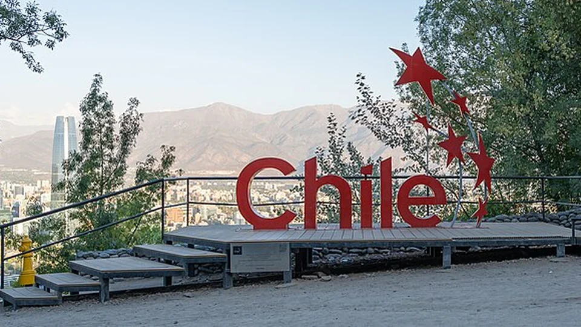

01
Cerro San Cristóbal
MiranteGrátis
a pé; transportes à parte

Foto: Rjcastillo · CC BY-SA 4.0 · Wikimedia Commons · recortada
Valor da entrada
Entrada de pedestre no parque: gratuita
(telefericosantiago.cl, consultado em 8/set/2026).
Funicular (funicularsantiago.cl, 8/set/2026): só ida 1.580 CLP
(≈ US$ 1,69 / ≈ R$ 9); ida e volta de terça a sexta 2.250 CLP (≈ US$ 2,41);
ida e volta sábado, domingo e feriados 2.060 CLP (≈ US$ 2,20).
Teleférico (telefericoonline.cl, 8/set/2026): só ida a partir de Oasis
3.150 CLP (≈ US$ 3,37); ida e volta 4.050 CLP (≈ US$ 4,33 / ≈ R$ 23).
Combo teleférico + funicular: desde 6.300 CLP (≈ US$ 6,74 / ≈ R$ 36).
Passe Vive el Parque, ilimitado nos dois mais os buses panorâmicos:
desde 11.500 CLP (≈ US$ 12,31); com Observatório, 13.500 CLP (≈ US$ 14,45).
Não encontrado tarifa infantil diferenciada e dia ou
horário de gratuidade nos transportes — o site oficial do teleférico não
publica nenhum dos dois.
Dias em que não funciona
O parque abre diariamente. O teleférico fecha todas as
segundas-feiras para manutenção e o funicular só abre às 13:00 na
segunda, além de fechar na primeira segunda-feira de cada mês. Horário geral
de terça a domingo, 10:00–18:45. Feriados de fechamento generalizado no Chile:
1/jan, 1/mai, 18 e 19/set e 25/dez.
Não confirmado se o Parquemet opera nos feriados de
Fiestas Patrias — costuma operar, mas não conseguimos confirmação oficial.
Endereço
Acessos principais: Pío Nono 450, Recoleta (Plaza Caupolicán, base do
funicular) e Av. El Cerro 750, Providencia (estação Oasis do teleférico). O
funicular lista oficialmente Pío Nono 485, Providencia. O nome oficial do
conjunto é Parque Metropolitano de Santiago, o Parquemet.
Ver no mapa
Ver no mapa
Metrô mais próximo
Baquedano — Linhas 1 e 5, cerca de 10 minutos a pé pela Pío Nono
até a base do funicular. Para o lado de Providencia e a estação Oasis do
teleférico: Pedro de Valdivia — Linha 1.
Pontos de referência
A Plaza Caupolicán e o portal de pedra no fim da rua Pío Nono, em
Bellavista. A estátua branca da Virgem no cume é visível de quase toda a cidade.
O Costanera Center fica bem à frente, do outro lado do rio Mapocho.
Pontos turísticos próximos
Barrio Bellavista (a base do funicular já está no bairro),
La Chascona (5 a 8 min a pé da Plaza Caupolicán), Patio Bellavista (5 min),
Parque Forestal e Museo de Bellas Artes (15 min).
Curiosidades, história e visitação 4 campos
Visitantes por ano
Não encontrado — não há número oficial
publicado. O site do teleférico fala apenas em "milhões de visitantes por ano",
sem cifra, e não localizamos publicação do Parquemet com número auditado.
Menor visitação e temperatura
Inverno, junho e julho. Máxima média de 16 °C em junho e 15 °C em julho;
mínima média de 4 °C e 3 °C (Weather Spark). É também o período mais chuvoso —
junho tem a maior precipitação, cerca de 60 mm. A inversão térmica de inverno
compromete justamente a vista.
Curiosidades
- A estação do funicular foi projetada pelo arquiteto Luciano Kulczewski e declarada Monumento Histórico em 2000 (Archivo Nacional de Chile).
- O monumento à Virgem Imaculada Conceição no cume tem 22,30 m no total — 10 m de pedestal e 12,30 m de imagem — pesa 36.610 kg e fica a 859,15 m acima do nível do mar (Biblioteca Nacional Digital de Chile).
- O parque tem mais de 700 hectares e é apresentado pelo próprio operador como o quarto maior parque urbano do mundo (telefericosantiago.cl).
Fatos históricos
A Lei nº 3.295, de 28/set/1917, declarou as terras do San Cristóbal
de utilidade pública para formar um grande parque; a posse oficial foi em
17/jun/1918. O funicular foi inaugurado em 1925 pelo presidente Arturo
Alessandri. A denominação oficial Parque Metropolitano de Santiago veio em 1966.
Promoveram a obra o jornalista e depois intendente Alberto Mackenna e o senador
Pedro Bannen; a ideia original é de Benjamín Vicuña Mackenna, de 1870.
Fonte: archivonacional.gob.cl.